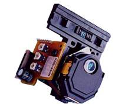
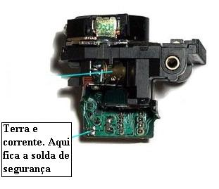

Sega CD - Trocando o leitor ótico
 :::. Por Gigacom-
O primeiro SEGA CD que tive comprei por uma bagatela, bem baratinho
(nem lembro quanto foi de tão barato), porém o Sega CD
já veio com defeito, não lia CD algum, por isso foi
barato... então me desafiei a arrumar esse console. E não
é que consegui? Saiba agora o que fazer para dar novos olhos
à esse aparelho!
:::. Por Gigacom-
O primeiro SEGA CD que tive comprei por uma bagatela, bem baratinho
(nem lembro quanto foi de tão barato), porém o Sega CD
já veio com defeito, não lia CD algum, por isso foi
barato... então me desafiei a arrumar esse console. E não
é que consegui? Saiba agora o que fazer para dar novos olhos
à esse aparelho!
_________________________________________________________________________________
Ha muito tempo atrás, possuir um Mega Drive não era coisa pra qualquer um, ter então um Mega Drive e um Sega CD ao mesmo tempo, era coisa que só alguns poucos muleques sortudos podiam experimentar. Ainda hoje o Sega CD é vendido por aí por preços nada agradavéis, apesar de acessíveis. Todavia, a maior parte dos aparelhos que se encontram no mercado são muito velhos e não raro já estão com o leitor ótico pelas ultimas.
A boa noticia é que tem como trocar o leitor ótico do Sega CD sem muita dificuldade, bastando de antemão saber qual o modelo do leitor que está no seu SCD e trocá-lo por outro novo.Há dois modelos de unidades, uma é a KSS-240a, fabricado pela Sony, e a outra que não costuma aparecer muito por aí é a Samsung SOH-04t . Eu particularmente suspeito que o leitor da Samsung seja uma copia do leitor da Sony (eles são iguaizinhos!). Há ainda um outro modelo de unidade ótica que pode aparecer, que é a KSS-200a/b (tambem muito parecida com as outras).

Leitor KSS-240a, é o mais comum e opreço dela gira em torno duns R$30,00
Via de regra, a maior parte dos SCDs usam a KSS-240a. É possivel
identificar o modelo do leitor do seu SCD olhando apenas a label que
sempre vem grudada no leitor mostrando qual é o modelo dele. Mas
se essa label não estiver presente, você pode simplesmente
comparar a sua unidade com uma das citadas acima.
De qualquer forma, não ha mais a fabricação dessas unidades pelas empresas que as criaram, só é possível encontrar no Brasil versões alternativas fabricadas na China, mas que normalmente funcionam sem muito problema, porém o formato do leitor ótico pode ser diferente do que está no seu SCD, apesar de o modelo ser o mesmo. No meu caso, comprei um leitor xing-ling por 27 reais, mas ao tentar encaixá-lo na unidade vi que o leitor não entrava bem no espaço vazio onde estava o outro leitor. A solução foi cerrar a base de metal com uma serra elétrica em uma extremidade para poder encaixar o leitor (solução meio bruta, mas funciona), infelizmente não havia outra alternativa.
A troca em si não tem mistério, tira-se o leitor com defeito, substitui pelo novo. Porém há três detalhes importantissimos nessa operação:
1º NUNCA, repito, NUNCA toque os contatos eletricos do leitor! Veja, se num leitor original tocar os condutores, partes eletricas e não isoladas do leitor já compromete o funcionamento dele, imagine se fizer isso num treco xing-ling. Pois é, a maior parte das pessoas que se aventuram a trocar o leitor ótico de qualquer coisa, acabam por inutilizar o leitor novo por conta disso. A causa é que esse dispositivo é extremamente sensível à descargas eletricas, que tambem podem ocorrer por estática. Portanto, fica a dica, na hora que for comprar o leitor na loja, tome cuidado para tocar somente nas partes de plástico do leitor.
2º Todo leitor ótico de CD, não importa qual seja o aparelho, vem com uma solda de proteção que liga o terra à corrente, antes que esta passe pelo circuito do leitor. Essa solda de proteção é para evitar que ocorra danos justamente pelo que falei logo acima. É preciso remover essa solda antes de ligar o aparelho com o leitor novo, senão o mesmo nunca irá funcionar. No caso dos leitores KSS 240a, a solda fica justamente onde está indicado na imagem abaixo:

A solda de segurança fica justamente no meio desses dois pontos de solda.
Só é preciso remover o excesso de solda que liga esses dois pontos. Removendo, o leitor estará apto a funionar no aparelho.
3º NUNCA, nem que sua mãe lhe ameace de dar uma surra com uma havaina de pau, NUNCA mexa nos trimpots do Sega CD e do leitor! Para quem não sabe, trimpots são potenciometros regulavéis, e no Sega CD há trimpots parecidos com parafusos amarelos soldados na placa mãe e no leitor. Eles são os responsáveis por regular a potência e o foco do leitor, mas esses valores não se alteram se o modelo do leitor ótico for o mesmo. Em raros casos, se mexe nesses reguladores para auxiliar o leitor a continuar funcionando quando este já dá sinais de cansaço (sinais pessoal, apenas sinais, quando o Sega CD já não está lendo nada direito, o jeito é trocar o leitor ótico, não há outro remédio). Não recomendo mexer neles pois eles são de dificil regulagem, e da forma como vem de fabrica, já estão ideais para funcionar da melhor forma possivel. Caso você já tenha feito a merda de desrregular essas belezinhas, leia o artigo Sega CD - Ajustando a unidade ótica aqui tambem na seção Oficina.
Seguindo essas dicas, não há muito mais o que falar. O negocio é trocar, e por para funcionar. Claro, pode ser que você dê o azar (como quase todo mundo) de comprar um leitor que não esteja bom. Como falei no inicio, o KSS 240a só é fabricado por empresas xing-ling, e são feitos com uma qualidade pra lá de duvidosa. Então, evite comprar esses leitores em sites da internet, ao invés disso, procure uma loja de eletrônica em sua cidade. Acredite, por maior ou menor que seja a tribo onde você vive, sempre há uma loja de eletrônica escondida em alguma rua obscura do comércio local. Essas unidades tambem são bastante comuns (graças a Deus, a Sony conseguiu colocar ela em uma penca de aparelhos de som) e portanto não são dificeis de se comprar. Comprando em uma loja, você poderá trocar o leitor facilmente caso ele não funcione. E só para reforçar, a maior parte das pessoas dá o azar de comprar um leitor estragado... eu já vi pelo menos umas 5 pessoas dando esse azar, inclusive eu. Aliás, até hoje não vi um cristão que conseguisse comprar logo de cara um leitor bom...
Em caso de duvidas, ou caso você queira algum socorro, acesse o trombone, que conversamos por lá.
Acesse o Trombone e comente sobre essa matéria!


Aqui, vou apresentar a restauração de um controle de SNES que comprei em péssimo estado numa feirinha da minha cidade, e que agora está lindinho funcionando perfeitamente. Confira as dicas, e faça uma restauração você também
Restaurando um controle de PSX
Peguei o mais feinho e judiado dos controles para fazer esse artigo. O coitado estava encardido na parte de cima, e debaixo dele encontrei arranhões nas partes de apoio da mão, e bastante sujeira acumulada nas inscrições. O conector do cabo estava muito arranhado e sujo tambem, o cabo então nem se fala... sujava a mão só de pegar